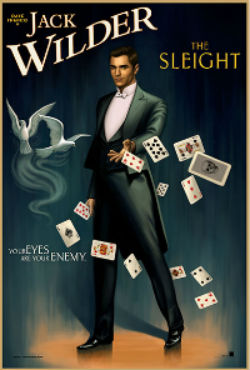

What TV Shows Have Been Canceled or Renewed?

Any TV lover wants to know which of their favorite shows will be picked up for the next season and if any will be taken off the air. Television networks are already making major decisions about the shows that will not be picked up for the upcoming Summer and Fall season. So far, long standing shows, such as Once Upon a Time, Scandal, and Grey's Anatomy, have all been picked up for another season. The Bachelor has been picked up for a 21st season, while Law & Order: SVU has been given an 18th season. HBO's Girls (see picture) has been picked up for a 7th and final season. Read more to learn what other shows have been picked up...

Aaron Paul Tweets for Dark Tower Role
Aaron Paul, most well known for his role of Jesse Pinkman on Breaking Bad, tweeted to author Stephen King to put in a good word for him to be cast in the movie based on his popular book, The Dark Tower. Rumors about the casting were all over the internet, so Aaron Paul decided to take the matter into his own hands and ask King directly. Although there is no official word on the casting, Aaron Paul claims his twitter exchange is still exciting.
Read more to find out more about their twitter exchange...Now You See Me 2: New Poster
Now You See Me is returning with a sequel, that will star Morgan Freeman, Jesse Eisenberg, and Daniel Radicliffe.
Read more to get more details on the upcoming sequel...